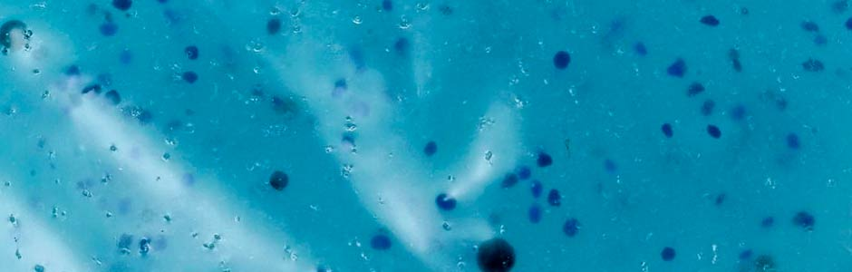

Los pequeños más contaminantes del mar
Los microplásticos son pequeñas piezas de plástico que contaminan el medioambiente.1 Aunque aún se debate a partir de qué tamaño puede considerárseles microplásticos, la Administración Nacional Oceánica y Atmosférica (NOAA) utiliza el parámetro de menos de 5 mm de diámetro para clasificarlos.2 Estos provienen de una gran variedad de fuentes, incluidos los cosméticos, ropa, artes de pesca, deshechos plásticos de uso cotidiano y procesos industriales.
Dos clasificaciones de microplásticos existen actualmente: microplásticos primarios, los cuales son fabricados específicamente para ser utilizados en productos; y microplásticos secundarios, los cuales derivan del proceso de deterioro de desechos plásticos más grandes, como las partes de plástico macroscópicas que conforman la Isla de basura del Pacífico.3 Se ha demostrado que los dos tipos de microplásticos permanecen en el medioambiente en altas concentraciones, particularmente en ecosistemas marinos y lacustres.
Debido a que no se biodegrada y solo se desintegra en partes más pequeñas, estos microplásticos terminan siendo absorbidos o ingeridos por muchos organismos, alojándose en sus cuerpos, tejidos4 y después de su muerte por intoxicacion, al no poder diferenciar entre si es su alimento marino, incrementandose el problema, entre aves marinas, peces, escualos, mamíferos acuáticos, como una ballena varada que murió a causa de la ingesta de plástico.
El ciclo completo y movimiento de los microplásticos en el medioambiente aun no se conoce por completo, pero es un tema que actualmente se está investigando.5 También continúan siendo investigadas las posibles consecuencias de estos microplásticos que terminan alojados en el cuerpo humano, que han sido encontrados en algunos alimentos provenientes del mar, como la sal, el agua embotellada y la del grifo.
Fuente: Wikipedia
El País. Los microplásticos ya han llegado al intestino humano